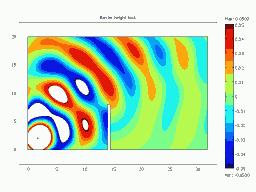

Animation of Diffraction over a Barrier
The following visualizations show how diffraction over a barrier varies with the ratio of barrier height to wavelength. Shown are steady state plots of sound level as well as a transient animation showing the diffraction of sound over the barrier.
Click a plot below to see the animation or a larger plot of the steady state response.
| Barrier Height |
Transient Animation | Steady State Lp |
h = λ |
 | |
h = 2 λ |
||
h = 4 λ |
{kind=link}
{kind=link}
{kind=link}
{kind=link}
{kind=link}
{kind=link}
The visualizations were created using COMSOL Multiphysics with the Acoustics Module. A transient solution was computed to show the initial diffraction of sound over the barrier. A steady state solution was computed to map out the steady state sound levels throughout the computation region. Mesh details for the computational model can be found in the reports generated by COMSOL. Click the buttons below to view the reports.
COMSOL Reports
| Transient | |||
| Steady State |

|
These animations, auralizations, and visualizations are © 2006 by
Ralph T. Muehleisen and are licenced under a
Creative Commons Attribution-NonCommercial 2.5 License.
|